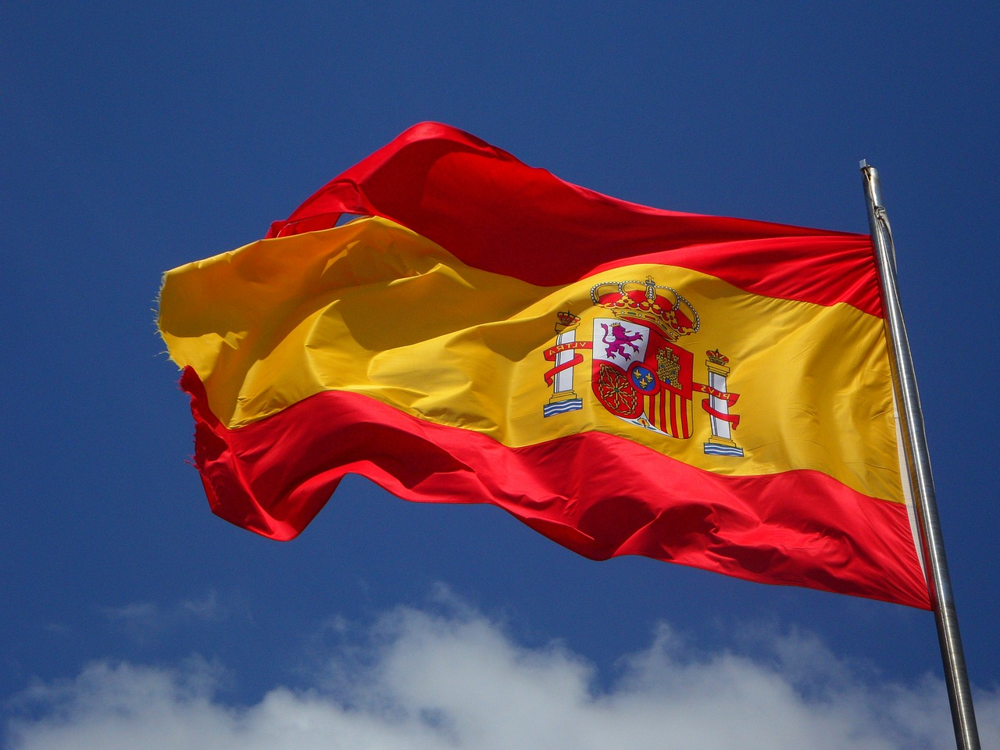

España, la democracia fascista
Me encanta España, principalmente por la facilidad que la gente tiene mezclando cosas. Es que llega a un punto en el que solo lo puedo describir como “flipante, macho” … Resulta que ahora España y todo el mundo es fascista, en cuanto te pones en contra de los “indepes” claro. Seguramente ahora estés pensando en los catalanes, pero un servidor, como buen vasco, ha vivido también ese sentimiento independentista cerca de su casa del norte.
Por si alguno no sabe lo que es un “indepe”, lo explicaré: son una panda de jóvenes, que buscan movida lanzando cocteles molotov a la grandiosa policía y a la… VIVA LA GUARDIA CIVIL COJONES. Ui, espera, que se me ha colado la definición que usa el PP… No, pero poniéndonos serios, básicamente, son gente que no está a gusto con X situación y quiere abandonar el barco… “A la mierda la unidad de España, yo salto y a ver si me va mejor por mi cuenta”, y bueno, añadir, que, si no les dejas saltar porque es ilegal o si no ves correcto que estén intentando saltar, eres un fascista, porque, la democracia real, es, para ellos, hacer lo que me salga de los cojones.
Mi parte favorita es cuando dicen “yo no voté la constitución, no me representa…”. Tengo una mala noticia, seguramente tu tampoco votaste ni los derechos humanos, ni los tratados de comercio y en sí, casi ninguna ley, pero bien que te beneficias de ellas (y también las aguantas). Como funciona la “democracia versión indepe” es: si es bueno para mí, bienvenido sea todo, si me jode en algo, ui, que fascista y poco democrática es España, joder.
No me confundáis, seré de las personas que más detestan al su actual líder español, Rajoy, pero eso no hará que no vea la realidad… No como los genios de Twitter que se ponen a llamar fascista a cualquier persona que les lleve la contraria, muy lógico todo. Me los imagino en sus casas, con un diccionario, mirando las palabras que deben usar… “A veeer, fascista es muy malo, opresión también es mala, …”, y cuando el pobre Serrat o demás personajes públicos se ponen en contra del referéndum catalán… Toma palos, se llevan todo el diccionario indepe gratuitamente… Que si fascista, que si asqueroso, que si…
Mucho se quejan de las hostias que repartió la policía, pero las que te llevas si dices que no ves correcto ese voto… Ui, creo que prefiero a un guardia civil sodomizándome eh…